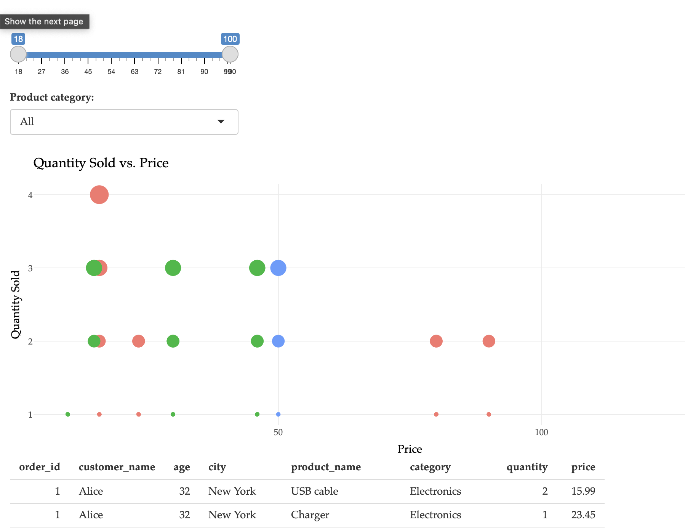
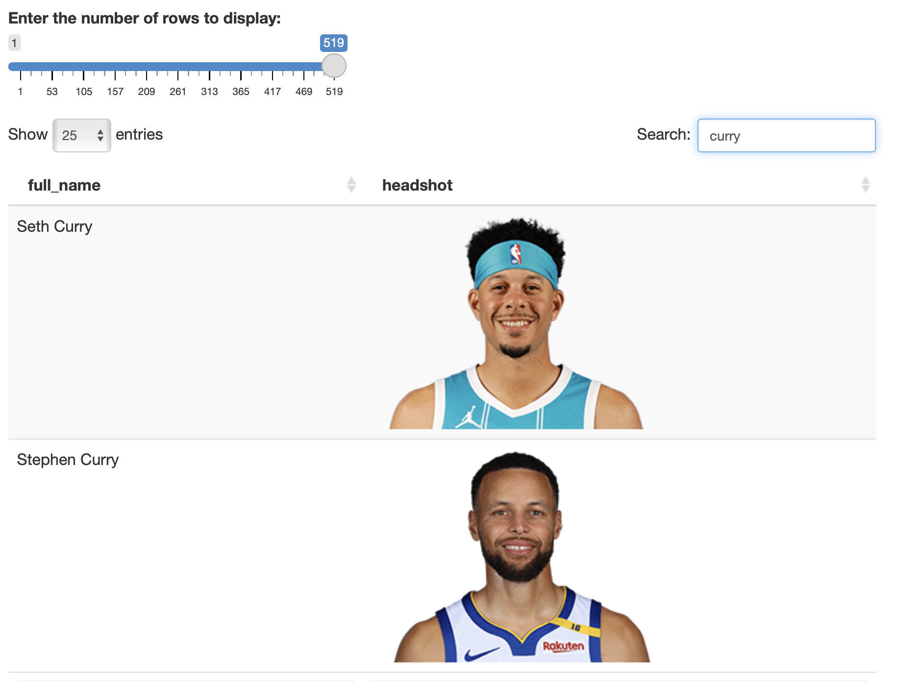

Show the code
install.packages("shiny")Participants will create a basic Shiny app to add interactivity to data visualizations and outputs.


Shiny is an R package that makes it easy to build interactive web applications directly from R. Below are the steps to create a basic Shiny app.
install.packages("shiny")Create a New Directory for Your App:
my_shiny_app).Create the app.R File:
app.R. library(shiny)
# Define UI
ui <- fluidPage(
titlePanel("Hello Shiny!"),
sidebarLayout(
sidebarPanel(
sliderInput("bins", "Number of bins:", min = 1, max = 50, value = 30)
),
mainPanel(
plotOutput("distPlot")
)
)
)
# Define server logic
server <- function(input, output) {
output$distPlot <- renderPlot({
x <- faithful[, 2]
bins <- seq(min(x), max(x), length.out = input$bins + 1)
hist(x, breaks = bins, col = 'darkgray', border = 'white')
})
}
# Run the application
shinyApp(ui = ui, server = server)Run the App Locally:
app.R in RStudio and click “Run App” to start your application locally.Once your app is working locally, you can publish it online using shinyapps.io.
install.packages("rsconnect") library(rsconnect)
# Set account info (replace with your own account details)
rsconnect::setAccountInfo(name='yourname',
token='yourtoken',
secret='yoursecret')Deploy the App Using rsconnect:
rsconnect::deployApp('path/to/your/app')Access Your Live App:
By following these steps, participants will gain practical experience in creating interactive web applications using Shiny and learn how to deploy them online using shinyapps.io.